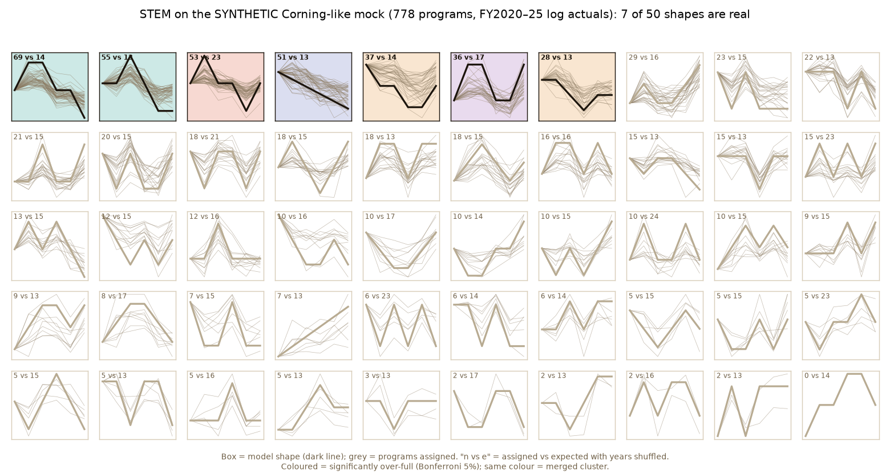

Methods scout
Two borrowed tools, each with a full research card. From genomics: STEM, which fixes 50 possible shapes for very short series in advance and asks which shapes hold more units than shuffling time would give. From catchment hydrology: storm hysteresis loops, which trace one series against another through each stress episode and score whether it peaked before or after.
The short version
- STEM short time-series clustering · genomics · Q2 · interesting · home field: well established (paper simulation reproduced in 20 of 20 seeds; 10 significant profiles on its G27 data as printed, filter count 2,137 vs 2,243). Tells real shapes from noise where k-means cannot; budget used as a replicate reading lifts the share of programs on their true shape 0.31 → 0.47 (Corning-like) and 0.75 → 0.82 (MS-like). Misses: k-means with the same k recovers planted groups as well (5 of 7), and the text-vs-numbers flag loses to an OLS slope.
- Storm hysteresis index · catchment hydrology · Q1 · interesting · home field: established, light on inference (Lloyd 2016 Fig. 1 values reproduced exactly). The spread loop is anticlockwise in 6 of 13 storms and clockwise in none, a shape ARDL and cross-correlation (r = −0.43 same week) cannot express, but most of it is quarter-end timing. DVP volume, positioning and the daily repo leg: no loop. Walk-forward: the limb term adds nothing (+0.5% RMSE).
STEM short time-series clustering: research card →
The 50-shape grids for both mocks, the noise test against k-means, the budget-as-replicate result, planted-group scoring, the text-vs-numbers miss, the power curve, home-field reproduction and three secret-sauce avenues are on the card.

Found via · web search 2026-11-18 14:26 ET → ernstlab.github.io/STEM (v1.3.15) and the ISMB 2005 supplement. Novelty: exotic-transfer.
Data. SYNTHETIC mock ZBB books (Corning-like 778 of 1,079 programs FY2020–25; MS-like 1,404 of 1,840 FY2021–25, programs with every year). Not either firm's budgets; answer key used only for scoring.
| Run (c = 1, 50 shapes, Bonferroni 5%) | Corning-like: real shapes / programs in them | MS-like |
|---|---|---|
| Actuals | 7 / 329 of 778 | 5 / 584 of 1,404 |
| Years shuffled per program (pure noise) | 1 / 29 | 0 / 0 |
| Noise-free true levels (answer key) | 6 / 756 | 5 / 1,193 |
| Budget | 8 / 426 | 5 / 789 |
| Actual + budget as replicate (exploratory) | 9 / 477 | 5 / 830 |
| Actuals, c = 2 (sensitivity) | 6 / 299 | 9 / 775 |
Code: runs/2026-11-18/stem (stem.jar 1.3.15 batch mode on the box's display; NumPy port at parity: counts and expected counts identical on three datasets).
Storm hysteresis index: research card →
The 13 storm loops, index by storm and series, the quarter-end check, the daily repo leg, the ARDL/SARIMAX baselines and walk-forward, the power check and three secret-sauce avenues are on the card.

Found via · web search 2026-11-18 14:26 ET → Lloyd et al. 2016, HESS and Vaughan et al. 2017, WRR. Novelty: exotic-transfer.
Data. Lab copies of public NY Fed financing fails, OFR repo (DVP − tri-party overnight spread, DVP outstanding; daily final vintage to 2026-06-30), CFTC TFF leveraged-fund net short (to 2025-12-30). Weekly 2018-05-09..2026-09-23. Descriptive only.
| Response series (13 fails storms) | Mean HI | Storms ≤ −0.2 / ≥ +0.2 | Shift-null p | Holm |
|---|---|---|---|---|
| DVP − tri-party spread | −0.168 | 6 / 0 | 0.042 | 0.126 |
| DVP outstanding | −0.136 | 5 / 1 | 0.202 | 0.404 |
| Leveraged-fund net short (11 storms) | +0.031 | 3 / 2 | 0.748 | 0.748 |
| Spread, quarter-end weeks masked (post hoc) | −0.078 | 4 / 0 | 0.346 | — |
| Daily: spread storms vs DVP volume (21 storms) | −0.057 | 9 / 4 | 0.326 | — |
| Walk-forward, 1-week-ahead log fails, 221 weeks from 2022-07-06 | RMSE |
|---|---|
| Random walk | 0.2934 |
| ARDL (fails lags 1–2, spread lags 1–2) | 0.2607 |
| ARDL + spread × rising-limb term (pre-registered bar: −3%, DM p < 0.10) | 0.2619 (+0.5%, DM p = 0.25) |
| SARIMAX(1,0,1) + lagged spread | 0.2582 |
Code: runs/2026-11-18/hyst.
- Question rotation. Q2 was least recently targeted (11-16); Q1 and Q3 both ran on 11-17, and Q1's previous run (11-15) is older than Q3's (11-16), so today is Q2 + Q1. No Q3 analysis today.
- Pre-registration. Written before any run on our data: runs/2026-11-18/PREREG.md. Not in it, and labelled on the cards: budget as a STEM replicate; k-means with k forced; the quarter-end mask; the adapted daily trigger; the power checks.
- Watchlist (not run): DREM, maSigPro, loadflux, the 2024 WRR hysteresis review, the Mau hysteresis reproducibility code. See watchlist.md.
- Yesterday. The scheduled 2026-11-17 edition (ECA, STATIS) was finished but never committed; it was published unchanged today (PR #73), with its run scripts.
- Data Jared would need to supply. Q2: real program-level budgets, actuals, headcount and decision packages (everything today is SYNTHETIC). Q1: nothing private; refresh CFTC TFF after 2025-12-30 (public); Form PF publication dates.